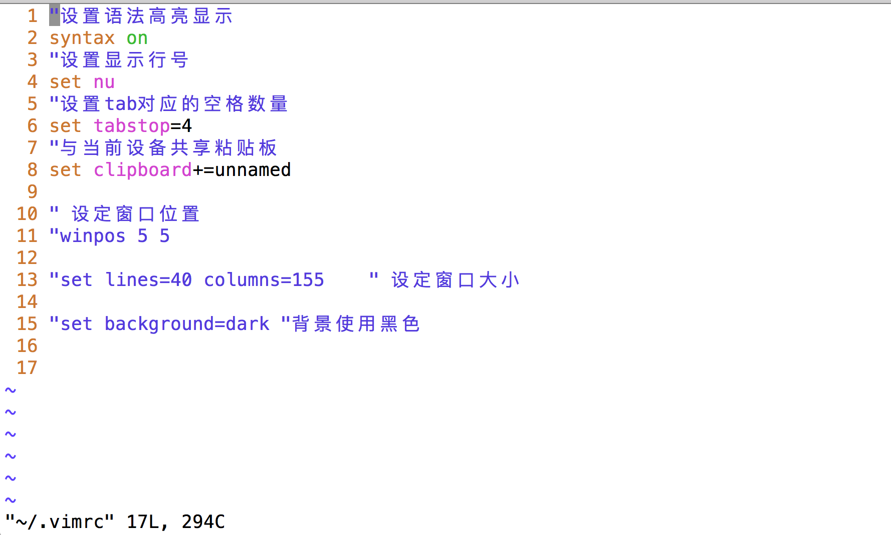
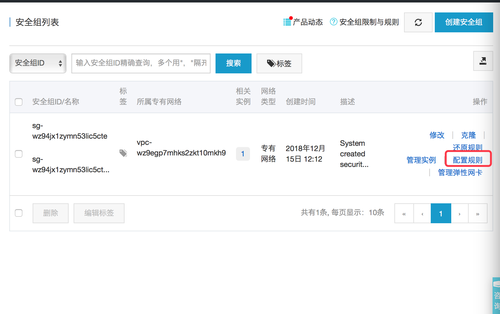

<!DOCTYPE html>
<html>
<head><meta name="generator" content="Hexo 3.8.0">
  <meta charset="utf-8">
  
  <title>Hexo</title>
  <meta name="viewport" content="width=device-width, initial-scale=1, maximum-scale=1">
  <meta property="og:type" content="website">
<meta property="og:title" content="Hexo">
<meta property="og:url" content="http://yoursite.com/index.html">
<meta property="og:site_name" content="Hexo">
<meta property="og:locale" content="default">
<meta name="twitter:card" content="summary">
<meta name="twitter:title" content="Hexo">
  
    <link rel="alternative" href="/atom.xml" title="Hexo" type="application/atom+xml">
  
  
    <link rel="icon" href="/img/favicon.png">
  
  
      <link rel="stylesheet" href="//cdn.bootcss.com/animate.css/3.5.0/animate.min.css">
  
  <link rel="stylesheet" href="/css/style.css">
  <link rel="stylesheet" href="/font-awesome/css/font-awesome.min.css">
  <link rel="apple-touch-icon" href="/apple-touch-icon.png">
  
    
    
  
  
      <link rel="stylesheet" href="/fancybox/jquery.fancybox.css">
  
  <!-- 加载特效 -->
    <script src="/js/pace.js"></script>
    <link href="/css/pace/pace-theme-flash.css" rel="stylesheet">
  <script>
      var yiliaConfig = {
          rootUrl: '/',
          fancybox: true,
          animate: true,
          isHome: true,
          isPost: false,
          isArchive: false,
          isTag: false,
          isCategory: false,
          open_in_new: false
      }
  </script>
</head></html>
<body>
  <div id="container">
    <div class="left-col">
    <div class="overlay"></div>
<div class="intrude-less">
    <header id="header" class="inner">
        <a href="/" class="profilepic">
            
            
            
        </a>

        <hgroup>
          <h1 class="header-author"><a href="/" title="Hi Mate">John Doe</a></h1>
        </hgroup>

        
        
        
            <div id="switch-btn" class="switch-btn">
                <div class="icon">
                    <div class="icon-ctn">
                        <div class="icon-wrap icon-house" data-idx="0">
                            <div class="birdhouse"></div>
                            <div class="birdhouse_holes"></div>
                        </div>
                        <div class="icon-wrap icon-ribbon hide" data-idx="1">
                            <div class="ribbon"></div>
                        </div>
                        
                        <div class="icon-wrap icon-link hide" data-idx="2">
                            <div class="loopback_l"></div>
                            <div class="loopback_r"></div>
                        </div>
                        
                        
                        <div class="icon-wrap icon-me hide" data-idx="3">
                            <div class="user"></div>
                            <div class="shoulder"></div>
                        </div>
                        
                    </div>
                    
                </div>
                <div class="tips-box hide">
                    <div class="tips-arrow"></div>
                    <ul class="tips-inner">
                        <li>菜单</li>
                        <li>标签</li>
                        
                        <li>友情链接</li>
                        
                        
                        <li>关于我</li>
                        
                    </ul>
                </div>
            </div>
        

        <div id="switch-area" class="switch-area">
            <div class="switch-wrap">
                <section class="switch-part switch-part1">
                    <nav class="header-menu">
                        <ul>
                        
                            <li><a href="/Home">博客首页</a></li>
                        
                            <li><a href="/works">作品展示</a></li>
                        
                            <li><a href="/about">留言打卡</a></li>
                        
                            <li><a href="/FrontEndGuide">前端导航</a></li>
                        
                        </ul>
                    </nav>
                    <nav class="header-nav">
                        <ul class="social">
                            
                                <a class="fl mail" target="_blank" href="http://mail.qq.com/cgi-bin/qm_share?t=qm_mailme&email=PAkNDgsKBQ4MCnxNTRJfU1E" title="mail">mail</a>
                            
                                <a class="fl github" target="_blank" href="https://github.com/luuman" title="github">github</a>
                            
                                <a class="fl zhihu" target="_blank" href="#" title="zhihu">zhihu</a>
                            
                                <a class="fl weibo" target="_blank" href="#" title="weibo">weibo</a>
                            
                                <a class="fl google" target="_blank" href="#" title="google">google</a>
                            
                                <a class="fl twitter" target="_blank" href="#" title="twitter">twitter</a>
                            
                                <a class="fl linkedin" target="_blank" href="#" title="linkedin">linkedin</a>
                            
                        </ul>
                    </nav>
                </section>
                
                
                <section class="switch-part switch-part2">
                    <div class="widget tagcloud" id="js-tagcloud">
                        
                    </div>
                </section>
                
                
                
                <section class="switch-part switch-part3">
                    <div id="js-friends">
                    
                      <a target="_blank" class="main-nav-link switch-friends-link" href="http://luuman.github.io/">name</a>
                    
                    </div>
                </section>
                

                
                
                <section class="switch-part switch-part4">
                
                    <div id="js-aboutme">纯海迷、爱运动、爱交友、爱旅行、喜欢接触新鲜事物、迎接新的挑战，更爱游离于错综复杂的编码与逻辑中</div>
                </section>
                
            </div>
        </div>
    </header>                
</div>
    </div>
    <div class="mid-col">
      <nav id="mobile-nav">
      <div class="overlay">
          <div class="slider-trigger"></div>
          <h1 class="header-author js-mobile-header hide"><a href="/" title="Me">John Doe</a></h1>
      </div>
    <div class="intrude-less">
        <header id="header" class="inner">
            <a href="/" class="profilepic">
                
                    
                
            </a>
            <hgroup>
              <h1 class="header-author"><a href="/" title="Me">John Doe</a></h1>
            </hgroup>
            
            <nav class="header-menu">
                <ul>
                
                    <li><a href="/Home">博客首页</a></li>
                
                    <li><a href="/works">作品展示</a></li>
                
                    <li><a href="/about">留言打卡</a></li>
                
                    <li><a href="/FrontEndGuide">前端导航</a></li>
                
                <div class="clearfix"></div>
                </ul>
            </nav>
            <nav class="header-nav">
                <div class="social">
                    
                        <a class="mail" target="_blank" href="http://mail.qq.com/cgi-bin/qm_share?t=qm_mailme&email=PAkNDgsKBQ4MCnxNTRJfU1E" title="mail">mail</a>
                    
                        <a class="github" target="_blank" href="https://github.com/luuman" title="github">github</a>
                    
                        <a class="zhihu" target="_blank" href="#" title="zhihu">zhihu</a>
                    
                        <a class="weibo" target="_blank" href="#" title="weibo">weibo</a>
                    
                        <a class="google" target="_blank" href="#" title="google">google</a>
                    
                        <a class="twitter" target="_blank" href="#" title="twitter">twitter</a>
                    
                        <a class="linkedin" target="_blank" href="#" title="linkedin">linkedin</a>
                    
                </div>
            </nav>
        </header>                
    </div>
</nav>
      <div class="body-wrap">
  
    <article id="post-vim编辑器之神" class="article article-type-post" itemscope itemprop="blogPost">
  
    <div class="article-meta">
      <a href="/2019/02/22/vim编辑器之神/" class="article-date">
      <time datetime="2019-02-22T13:21:15.774Z" itemprop="datePublished">2019-02-22</time>
</a>
    </div>
  
  <div class="article-inner">
    
      <input type="hidden" class="isFancy">
    
    
      <header class="article-header">
        
  
    <h1 itemprop="name">
      <a class="article-title" href="/2019/02/22/vim编辑器之神/">vim编辑器之神</a>
    </h1>
  

      </header>
      
    
    <div class="article-entry" itemprop="articleBody">
      
          
        <h1 id="vim编辑器之神"><a href="#vim编辑器之神" class="headerlink" title="vim编辑器之神"></a>vim编辑器之神</h1><h3 id="配置vimrc配置"><a href="#配置vimrc配置" class="headerlink" title="配置vimrc配置"></a>配置vimrc配置</h3><p>在shell中可以通过 <code>vim ~/.vimrc</code> 或者 <code>vim /etc/vimrc</code> 打开vimrc文件对vim进行配置。在这个文件中可以进行很多和vim相关的配置，常用的如下（如果对其他配置感兴趣的可以自己百度）：</p>
<p> </p>
<h3 id="常用操作"><a href="#常用操作" class="headerlink" title="常用操作"></a>常用操作</h3><h4 id="1-模式切换"><a href="#1-模式切换" class="headerlink" title="1.模式切换"></a>1.模式切换</h4><p>我们可以将vim分为命令模式、编辑模式和末行模式三种<br><strong>命令模式：</strong>进入vim的时候vim是处于命令模式状态下的，这个时候输入内容不会出现在编辑区  (最末什么都没有)</p>
<p><strong>末行模式：</strong>在命令模式下输入冒号，让vim进入末行模式。在末行模式的冒号后面可以输入相关的一些指令进行相关操作  (最后有一个冒号)</p>
<p><strong>编辑模式：</strong>在命令模式下按’i’进入编辑模式。在编辑模式下可以对文件内容进行编辑 (最后 –INSERT– 或者 –插入–)  </p>
<p>####2.保存和退出<br>在末行模式下输入相应的指令可以对编辑区的内容进行保存和退出vim界面<br><strong>w</strong> – 只保存(类似快捷键ctr+s)<br><strong>q</strong> – 退出（在编辑区的内容全部都保存的情况下才有效）<br><strong>wq</strong> – 保存并退出<br><strong>q!</strong>  – 强制退出（不保存修改信息）    </p>
<p>####3.光标操作<br>以下光标操作都是在命令模式下输入的<br><strong>^(shift+6)</strong>  – 移动到行首<br><strong>$(shift+4)</strong>  – 移动到行尾<br><strong>G(shift+g)</strong>    – 移动到文件末尾<br><strong>行号G</strong>            – 移动到指定行,例如:30G, 让光标直接跳转到行号是30的那一行<br><strong>gg</strong>                – 移动到文件开头  </p>
<p>####4.文本操作<br>以下操作不带冒号的是在命令模式下输入，前面有冒号代码后面的内容是在末行模式下输入<br><strong>dd</strong>            – 删除光标所在的行<br><strong>数字dd</strong>        – 从光标所在行开始往后面开始删，删除指定数量行内容<br><strong>:%d</strong>        – 删除所有     </p>
<p><strong>yy</strong>         – 复制光标所在的行<br><strong>数字yy</strong>        – 从光标所在行开始复制指定行数的内容<br><strong>p</strong>            – 将复制的内容粘贴到光标所在的位置<br><strong>u</strong>            – 撤销<br><strong>ctr+r</strong>    – 反撤销    </p>
<p><strong>:%!sort</strong>  – 对内容排序 （将一行内容看成一个字符串，然后按字符串大小进行排序） </p>
<p><strong>:/查找对象[/gice]</strong>    – 搜索匹配正则表达式的内容，按回车回到命令模式后按n往前查找，按N往后查找<br><strong>:/正则表达式</strong>    –搜索匹配正则表达式的内容，按回车回到命令模式后按n往前查找，按N往后查找  (正则表达式除了表示次数的符号前要加\,别的都和python一样,例如:<br>:/\d{2}    –查找两个数字<br>:/a+        –查找a出现一次或多次)</p>
<p>*<em>:1,$s/被替换对象/替换内容[/gice</em>]*    – 将正则表达式匹配到的内容替换成指定内容<br>注意:参数可以不用写 </p>
<pre><code>-    g: 全局匹配  
-     i: 忽略大小写 
-   c: 替换时需要提示  
-   e: 忽略错误  
</code></pre>
      
      
    </div>
    
    <div class="article-info article-info-index">
      
      

      
      
      <div class="clearfix"></div>
    </div>
    
  </div>
  
</article>


  
    <article id="post-Nginx服务器安装" class="article article-type-post" itemscope itemprop="blogPost">
  
    <div class="article-meta">
      <a href="/2019/02/22/Nginx服务器安装/" class="article-date">
      <time datetime="2019-02-22T13:21:15.768Z" itemprop="datePublished">2019-02-22</time>
</a>
    </div>
  
  <div class="article-inner">
    
      <input type="hidden" class="isFancy">
    
    
      <header class="article-header">
        
  
    <h1 itemprop="name">
      <a class="article-title" href="/2019/02/22/Nginx服务器安装/">git常用指令</a>
    </h1>
  

      </header>
      
    
    <div class="article-entry" itemprop="articleBody">
      
          
        <h1 id="Nginx服务器"><a href="#Nginx服务器" class="headerlink" title="Nginx服务器"></a>Nginx服务器</h1><h3 id="1-阿里云添加80端口"><a href="#1-阿里云添加80端口" class="headerlink" title="1.阿里云添加80端口"></a>1.阿里云添加80端口</h3><p>阿里云上默认只有一个22端口用来做远程登录，如果希望在阿里云上安装支持http请求的nginx服务器，需要给阿里云添加80端口</p>
<p><br><br><br></p>
<h3 id="2-安装nginx"><a href="#2-安装nginx" class="headerlink" title="2. 安装nginx"></a>2. 安装nginx</h3><p>a) 添加nginx存储库  </p>
<figure class="highlight plain"><table><tr><td class="gutter"><pre><span class="line">1</span><br></pre></td><td class="code"><pre><span class="line">yum install epel-release</span><br></pre></td></tr></table></figure>
<p>b) 安装nginx</p>
<figure class="highlight python"><table><tr><td class="gutter"><pre><span class="line">1</span><br><span class="line">2</span><br><span class="line">3</span><br><span class="line">4</span><br></pre></td><td class="code"><pre><span class="line">	yum install nginx</span><br><span class="line">```  </span><br><span class="line">c) 运行nginx  </span><br><span class="line">Nginx不会自行启动。要运行Nginx</span><br></pre></td></tr></table></figure>
<pre><code>systemctl start nginx
</code></pre><figure class="highlight plain"><table><tr><td class="gutter"><pre><span class="line">1</span><br><span class="line">2</span><br></pre></td><td class="code"><pre><span class="line"></span><br><span class="line">nginx的运行命令:</span><br></pre></td></tr></table></figure>
<pre><code>systemctl status nginx 查看nginx的状态  
systemctl start/stop/enable/disable nginx 启动/关闭/设置开机启动/禁止开机启动  
</code></pre><figure class="highlight plain"><table><tr><td class="gutter"><pre><span class="line">1</span><br><span class="line">2</span><br></pre></td><td class="code"><pre><span class="line"></span><br><span class="line">d) 系统启动时启动Nginx</span><br></pre></td></tr></table></figure>
<pre><code>systemctl enable nginx
</code></pre><figure class="highlight plain"><table><tr><td class="gutter"><pre><span class="line">1</span><br><span class="line">2</span><br></pre></td><td class="code"><pre><span class="line"></span><br><span class="line">e）如果您正在运行防火墙，请运行以下命令以允许HTTP和HTTPS通信：</span><br></pre></td></tr></table></figure>
<pre><code>sudo firewall-cmd --permanent --zone=public --add-service=http 

sudo firewall-cmd --permanent --zone=public --add-service=https

sudo firewall-cmd --reload
</code></pre><figure class="highlight plain"><table><tr><td class="gutter"><pre><span class="line">1</span><br><span class="line">2</span><br><span class="line">3</span><br><span class="line">4</span><br><span class="line">5</span><br></pre></td><td class="code"><pre><span class="line"></span><br><span class="line"></span><br><span class="line">### 3.nginx目录共享配置  </span><br><span class="line">a) 在contOS目录中确定一个需要共享的文件夹，例如： /home/yuting  </span><br><span class="line">b) 打开 etc/nginx/nginx.conf 文件，设置server</span><br></pre></td></tr></table></figure>
<pre><code>#共享设置 - 在浏览器中输入服务器ip地址，会展示共享目录的文件列表
root /home/yuting;
location / {
       autoindex on;
       autoindex_exact_size on;
       autoindex_localtime on;
}  
</code></pre><figure class="highlight plain"><table><tr><td class="gutter"><pre><span class="line">1</span><br><span class="line">2</span><br></pre></td><td class="code"><pre><span class="line"></span><br><span class="line">除了可以共享文件，还可以自定义页面</span><br></pre></td></tr></table></figure>
<pre><code>#自定义服务器页面
location / {
        root /home/yuting;
        index index.html index.htm;
}
</code></pre><p><code>`</code></p>
<p>注意： 如果出现权限问题，可以修改目录的权限  </p>
<h1 id="ssh密钥认证"><a href="#ssh密钥认证" class="headerlink" title="ssh密钥认证"></a>ssh密钥认证</h1><p>1.在主机和从机上执行：<code>ssh-keygen</code></p>
<p>2.在从机上执行:  <code>scp  id_rsa.pub  root@主机地址:~/.ssh/master.pub</code><br>(上面这条指令是将从机上的 id_rsa.pub文件拷贝传递给到主机的.ssh文件夹下，并且命名为’master.pub’)</p>
<p>3.在主机中的.ssh文件夹中创建authorized_keys文件： <code>touch authorized_keys</code> </p>
<p>4.修改文件authorized_keys的权限: <code>chmod 600  authorized_keys</code>  </p>
<p>5.将master.pub放进authorized_keys文件中:  <code>cat master.pub &gt;&gt;  authorized_keys</code></p>
<p>6.在操作主机的时候，需要主机能够自己免密访问自己就将自己的公钥放在自己的authorized_keys文件中</p>

      
      
    </div>
    
    <div class="article-info article-info-index">
      
      

      
      
      <div class="clearfix"></div>
    </div>
    
  </div>
  
</article>


  
    <article id="post-MySQL配置" class="article article-type-post" itemscope itemprop="blogPost">
  
    <div class="article-meta">
      <a href="/2019/02/22/MySQL配置/" class="article-date">
      <time datetime="2019-02-22T13:21:15.729Z" itemprop="datePublished">2019-02-22</time>
</a>
    </div>
  
  <div class="article-inner">
    
      <input type="hidden" class="isFancy">
    
    
      <header class="article-header">
        
  
    <h1 itemprop="name">
      <a class="article-title" href="/2019/02/22/MySQL配置/">git常用指令</a>
    </h1>
  

      </header>
      
    
    <div class="article-entry" itemprop="articleBody">
      
          
        <p>MySQL配置  </p>
<ol>
<li><p>下载MySQL源安装包: <code>wget http://dev.mysql.com/get/mysql57-community-release-el7-8.noarch.rpm</code>  </p>
</li>
<li><p>安装MySQL源: <code>yum localinstall mysql57-community-release-el7-8.noarch.rpm</code></p>
</li>
<li><p>安装MySQL:  <code>yum install mysql-community-server</code>  </p>
</li>
<li><p>设置开启启动MySQL服务: <code>systemctl enable mysqld</code>  </p>
</li>
<li>启动/重启MySQL服务：systemctl restart mysqld  </li>
<li>查看MySQL初始密码：grep ‘A temporary password’ /var/log/mysqld.log  </li>
<li>更改MySQL密码：mysqladmin -u root -p’旧密码’ password ‘新密码’<br> 这里更改密码出了问题，更改失败，这是因为密码太过简单的原因。有两个接解决方法：</li>
</ol>
<p>　　　　方法一：把密码设置复杂点（这是最直接的方法）</p>
<p>　　　　方法二：关闭mysql密码强度验证(validate_password)</p>
<p>　　　　　　　　编辑配置文件：<code>vim /etc/my.cnf</code>， 增加这么一行validate_password=off</p>
<p>　　　　　　　　编辑后重启mysql服务：<code>systemctl restart mysqld</code>  
　　　　　　　　  
　　　　　　　　  </p>
<ol start="8">
<li>设置mysql能够远程访问:<br> a. 登录进MySQL:  <code>mysql -uroot -p密码</code><br> b. 增加一个用户给予访问权限: <code>grant all privileges on *.* to &#39;root&#39;@&#39;ip地址&#39; identified by &#39;密码&#39; with grant option;</code><br> c. 刷新权限：<code>flush privileges;­</code>  </li>
</ol>

      
      
    </div>
    
    <div class="article-info article-info-index">
      
      

      
      
      <div class="clearfix"></div>
    </div>
    
  </div>
  
</article>


  
    <article id="post-git常用指令" class="article article-type-post" itemscope itemprop="blogPost">
  
    <div class="article-meta">
      <a href="/2019/02/22/git常用指令/" class="article-date">
      <time datetime="2019-02-22T13:20:52.513Z" itemprop="datePublished">2019-02-22</time>
</a>
    </div>
  
  <div class="article-inner">
    
      <input type="hidden" class="isFancy">
    
    
      <header class="article-header">
        
  
    <h1 itemprop="name">
      <a class="article-title" href="/2019/02/22/git常用指令/">git常用指令</a>
    </h1>
  

      </header>
      
    
    <div class="article-entry" itemprop="articleBody">
      
          
        <h1 id="git常用指令"><a href="#git常用指令" class="headerlink" title="git常用指令"></a>git常用指令</h1><h2 id="1-基本指令"><a href="#1-基本指令" class="headerlink" title="1.基本指令"></a>1.基本指令</h2><p><code>git init</code> &nbsp;&nbsp;&nbsp;&nbsp;&nbsp; ——  新建git仓库<br><code>git add 文件/文件夹</code> &nbsp;&nbsp;&nbsp;&nbsp;&nbsp; ——  将文件添加到缓存区中<br><code>git add -A</code> &nbsp;&nbsp;&nbsp;&nbsp;&nbsp; — 添加所有内容到缓存区中<br><code>git stutas</code> &nbsp;&nbsp;&nbsp;&nbsp;&nbsp;———    查看git状态<br><code>git commit -m  ‘提交信息’</code>  &nbsp;&nbsp;&nbsp;&nbsp;&nbsp;——  将缓存区中的内容全部提交到git本地仓库中  </p>
<p><code>git log</code>   &nbsp;&nbsp;&nbsp;&nbsp;&nbsp;——-    查看提交日志  </p>
<p><code>git reset  - - hard   HEAD</code>  &nbsp;&nbsp;&nbsp;&nbsp;&nbsp;——   让工作目录中的内容和仓库中的内容保持一致<br><code>git reset  --hard HEAD^</code>   &nbsp;&nbsp;&nbsp;&nbsp;&nbsp;——  回到上一个版本<br><code>git  reset  - - hard 版本号</code>  &nbsp;&nbsp;&nbsp;&nbsp;&nbsp;——  回到指定的版本<br><code>git checkout  - -  文件名</code>  &nbsp;&nbsp;&nbsp;&nbsp;&nbsp; ——  从暂存区中恢复工作目录中的内容(让工作区中的指定文件，回到上次提交的时候的状态)  </p>
<p><code>git clone &lt;url&gt;</code> - 将服务器上的项目(仓库)克隆 (使用https地址需要输入密码，使用ssh地址需要添加公钥)  </p>
<p><code>git remote add origin 地址</code>      &nbsp;&nbsp;&nbsp;&nbsp;&nbsp;—– 关联远程仓库(只需要关联一次)</p>
<p><code>git push [-u] origin master</code>  &nbsp;&nbsp;&nbsp;&nbsp;&nbsp;—– 提交(-u在第一次提交分之的时候才用)  </p>
<h2 id="2-分之管理"><a href="#2-分之管理" class="headerlink" title="2.分之管理"></a>2.分之管理</h2><p>创建仓库会默认给我们创建一个master分之,这个分之一般作为提交和发布分之;开发一般会自己创建一个develop分之，用来开发和测试;多人协作的时候还可能根据不同的人或者(不同的功能)创建不同的分之，用来独立开发  </p>
<p>常见分之： master(主要是合并develop), develop(主要合并下面的其他分支), 功能/人员分之(开发)  </p>
<p><code>git branch [-a]</code>   &nbsp;&nbsp;&nbsp;&nbsp;&nbsp;        - 查看分之<br><code>git branch 分之名</code>        &nbsp;&nbsp;&nbsp;&nbsp;&nbsp;- 创建分之<br><code>git checkout   分支名</code>        &nbsp;&nbsp;&nbsp;&nbsp;&nbsp;-   切换分之<br><code>git checkout -b 分之名</code>        &nbsp;&nbsp;&nbsp;&nbsp;&nbsp;    - 切换并创建新的分之<br><code>git diff    分之1  分之2</code>        &nbsp;&nbsp;&nbsp;&nbsp;&nbsp;- 查看两个分之之间的差异<br><code>git merge 分之名</code>            &nbsp;&nbsp;&nbsp;&nbsp;&nbsp;- 让当前分之和指定分之进行合并     </p>
<p>注意: 切换分之、push、pull，这些操作前要保证工作区是clean  </p>
<p>怎么避免冲突：  不要发生多个分之对同一个文件在同一个版本下进行修改(和同伴确认和商量)</p>

      
      
    </div>
    
    <div class="article-info article-info-index">
      
      

      
      
      <div class="clearfix"></div>
    </div>
    
  </div>
  
</article>


  
    <article id="post-hello-world" class="article article-type-post" itemscope itemprop="blogPost">
  
    <div class="article-meta">
      <a href="/2019/02/18/hello-world/" class="article-date">
      <time datetime="2019-02-18T10:21:20.487Z" itemprop="datePublished">2019-02-18</time>
</a>
    </div>
  
  <div class="article-inner">
    
      <input type="hidden" class="isFancy">
    
    
      <header class="article-header">
        
  
    <h1 itemprop="name">
      <a class="article-title" href="/2019/02/18/hello-world/">Hello World</a>
    </h1>
  

      </header>
      
    
    <div class="article-entry" itemprop="articleBody">
      
          
        <p>Welcome to <a href="https://hexo.io/" target="_blank" rel="noopener">Hexo</a>! This is your very first post. Check <a href="https://hexo.io/docs/" target="_blank" rel="noopener">documentation</a> for more info. If you get any problems when using Hexo, you can find the answer in <a href="https://hexo.io/docs/troubleshooting.html" target="_blank" rel="noopener">troubleshooting</a> or you can ask me on <a href="https://github.com/hexojs/hexo/issues" target="_blank" rel="noopener">GitHub</a>.</p>
<h2 id="Quick-Start"><a href="#Quick-Start" class="headerlink" title="Quick Start"></a>Quick Start</h2><h3 id="Create-a-new-post"><a href="#Create-a-new-post" class="headerlink" title="Create a new post"></a>Create a new post</h3><figure class="highlight bash"><table><tr><td class="gutter"><pre><span class="line">1</span><br></pre></td><td class="code"><pre><span class="line">$ hexo new <span class="string">"My New Post"</span></span><br></pre></td></tr></table></figure>
<p>More info: <a href="https://hexo.io/docs/writing.html" target="_blank" rel="noopener">Writing</a></p>
<h3 id="Run-server"><a href="#Run-server" class="headerlink" title="Run server"></a>Run server</h3><figure class="highlight bash"><table><tr><td class="gutter"><pre><span class="line">1</span><br></pre></td><td class="code"><pre><span class="line">$ hexo server</span><br></pre></td></tr></table></figure>
<p>More info: <a href="https://hexo.io/docs/server.html" target="_blank" rel="noopener">Server</a></p>
<h3 id="Generate-static-files"><a href="#Generate-static-files" class="headerlink" title="Generate static files"></a>Generate static files</h3><figure class="highlight bash"><table><tr><td class="gutter"><pre><span class="line">1</span><br></pre></td><td class="code"><pre><span class="line">$ hexo generate</span><br></pre></td></tr></table></figure>
<p>More info: <a href="https://hexo.io/docs/generating.html" target="_blank" rel="noopener">Generating</a></p>
<h3 id="Deploy-to-remote-sites"><a href="#Deploy-to-remote-sites" class="headerlink" title="Deploy to remote sites"></a>Deploy to remote sites</h3><figure class="highlight bash"><table><tr><td class="gutter"><pre><span class="line">1</span><br></pre></td><td class="code"><pre><span class="line">$ hexo deploy</span><br></pre></td></tr></table></figure>
<p>More info: <a href="https://hexo.io/docs/deployment.html" target="_blank" rel="noopener">Deployment</a></p>

      
      
    </div>
    
    <div class="article-info article-info-index">
      
      

      
      
      <div class="clearfix"></div>
    </div>
    
  </div>
  
</article>


  
  
</div>
      <footer id="footer">
    <div class="outer">
        <div id="footer-info">
            <div class="footer-left">
                &copy; 2019 John Doe
            </div>
            <div class="footer-right">
                <a href="http://hexo.io/" target="_blank">Hexo</a>  Theme <a href="https://github.com/luuman/hexo-theme-spfk" target="_blank">spfk</a> by luuman
            </div>
        </div>
        
            <div class="visit">
                
                    <span id="busuanzi_container_site_pv" style="display:none">
                        <span id="site-visit">海贼到访数: 
                            <span id="busuanzi_value_site_uv"></span>
                        </span>
                    </span>
                
                
                    <span>, </span>
                
                
                    <span id="busuanzi_container_page_pv" style="display:none">
                        <span id="page-visit">本页阅读量: 
                            <span id="busuanzi_value_page_pv"></span>
                        </span>
                    </span>
                
            </div>
        
    </div>
</footer>

    </div>
    <script src="https://7.url.cn/edu/jslib/comb/require-2.1.6,jquery-1.9.1.min.js"></script>
<script src="/js/main.js"></script>

    <script>
        $(document).ready(function() {
            var backgroundnum = 24;
            var backgroundimg = "url(/background/bg-x.jpg)".replace(/x/gi, Math.ceil(Math.random() * backgroundnum));
            $("#mobile-nav").css({"background-image": backgroundimg,"background-size": "cover","background-position": "center"});
            $(".left-col").css({"background-image": backgroundimg,"background-size": "cover","background-position": "center"});
        })
    </script>


<div class="scroll" id="scroll">
    <a href="#"><i class="fa fa-arrow-up"></i></a>
    <a href="#comments"><i class="fa fa-comments-o"></i></a>
    <a href="#footer"><i class="fa fa-arrow-down"></i></a>
</div>
<script>
    $(document).ready(function() {
        if ($("#comments").length < 1) {
            $("#scroll > a:nth-child(2)").hide();
        };
    })
</script>

<script async src="https://dn-lbstatics.qbox.me/busuanzi/2.3/busuanzi.pure.mini.js">
</script>

  <script language="javascript">
    $(function() {
        $("a[title]").each(function() {
            var a = $(this);
            var title = a.attr('title');
            if (title == undefined || title == "") return;
            a.data('title', title).removeAttr('title').hover(

            function() {
                var offset = a.offset();
                $("<div id=\"anchortitlecontainer\"></div>").appendTo($("body")).html(title).css({
                    top: offset.top - a.outerHeight() - 15,
                    left: offset.left + a.outerWidth()/2 + 1
                }).fadeIn(function() {
                    var pop = $(this);
                    setTimeout(function() {
                        pop.remove();
                    }, pop.text().length * 800);
                });
            }, function() {
                $("#anchortitlecontainer").remove();
            });
        });
    });
</script>


  </div>
</body>
</html>